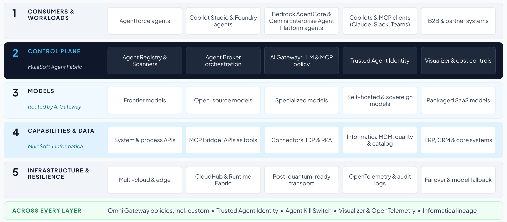
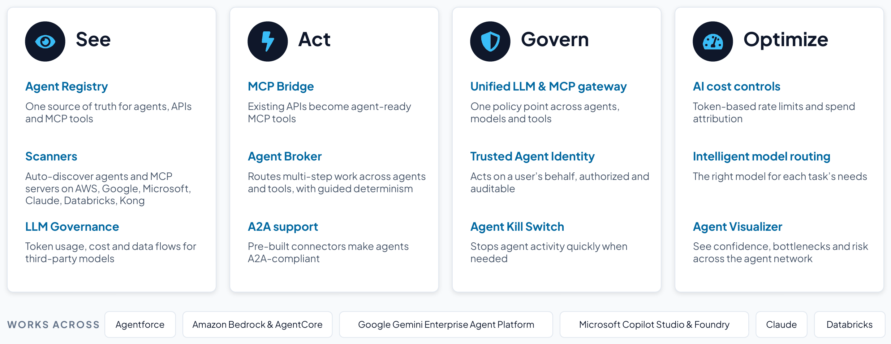

Section 7
Realizing the north star with MuleSoft and Informatica
Section 6 defines what good looks like without naming a vendor. This section shows one way to realize it with publicly documented products. MuleSoft Agent Fabric is the control plane and Informatica the data foundation, while MuleSoft APIs, connectors and MCP Bridge form the capability layer. Between them they cover every layer of the north star, and each piece can be adopted in the phases set out in Section 8.
The realized architecture
Figure 5 maps the target reference architecture to the capabilities that realize it. The use cases in Sections 11 to 13 follow the same mapping.

- Consumers and workloads: agents from any platform, discovered by Agent Scanners and registered in Agent Registry with an owner and a tier, alongside copilots, MCP clients and partner systems.21
- Control plane (MuleSoft Agent Fabric): Agent Registry and Scanners, Agent Broker, AI Gateway for LLM and MCP policy, Trusted Agent Identity, Visualizer and cost controls.21
- Models: any provider, routed per task by AI Gateway’s intelligent model routing, with spend attributed by team, app and use case.21
- Capabilities and data (MuleSoft and Informatica): system and process APIs, MCP Bridge and connectors with IDP and RPA come from MuleSoft. Informatica supplies master data, data quality, catalog and lineage, exposing its data services to agents through MCP servers, and Data 360 holds customer data.21,77
- Infrastructure and resilience: CloudHub or customer-managed Runtime Fabric, with post-quantum-ready transport, OpenTelemetry-based observability and audit logs, and failover with model fallback.
- Across every layer: security comes from Omni Gateway policies, including custom ones, Trusted Agent Identity and the Agent Kill Switch. Agent Visualizer, OpenTelemetry traces and Informatica governance and lineage support oversight and audit.
What Agent Fabric is
MuleSoft Agent Fabric is an enterprise agent control plane, giving one place to discover, govern, orchestrate and observe any agent, AI asset and agentic workflow, wherever it was built.21 It sits on MuleSoft’s integration and API management foundation. Its capabilities group into four jobs:
| Job | Capabilities | What they do |
|---|---|---|
| See |
|
|
| Act |
|
|
| Govern |
|
|
| Optimize |
|
|

Informatica as the data foundation
An agent’s reliability depends on the data and context it acts on. Informatica realizes the data half of the capabilities layer and exposes its data services to agents through MCP servers that Agent Fabric can govern:77
- Master data. Multidomain MDM keeps golden records and hierarchies for domains such as customers, suppliers, products and assets, which agents reach through governed APIs.77
- Semantics, catalog and lineage. Data Governance and Catalog gives agents and people a shared glossary and lineage, and its CDGC Metadata Search MCP server lets agents find data assets in natural language.77
- Data quality. Data quality rules validate data at the point of entry, and the Address Verification MCP server lets agents validate, standardize and geocode addresses as they work.77
How the realization covers the requirements
Measured against these control-plane requirements, the realization covers four dimensions:
- Breadth. Agent Fabric governs agents regardless of where they were built, including Agentforce, Amazon Bedrock and AgentCore, Google Gemini Enterprise Agent Platform (formerly Vertex AI), Microsoft Copilot Studio and Microsoft Foundry.21
- Actionability. Because it is built on MuleSoft’s integration platform, agents can act in the systems where work happens (ERP, CRM, mainframe and partner systems) through governed APIs and MCP tools, beyond answering questions.
- Runtime enforcement. Policy, identity, rate limits and the kill switch are enforced at runtime in the gateway path, so they apply to every call that passes through the gateway.
- Economics. Token visibility, spend attribution and intelligent routing connect AI spend to business value,21 which is where many agent programs stall.
Requirement-to-capability map
The table maps control-plane requirements to specific MuleSoft and Informatica capabilities.
| Control-plane requirement | MuleSoft or Informatica capability |
|---|---|
| One API and common policy across models | Unified LLM & MCP gateway (AI Gateway) |
| Cost visibility and limits |
|
| Dynamic, cost-aware model routing | Intelligent model routing |
| Enterprise capabilities exposed to agents | MuleSoft APIs + MCP Bridge |
| Trusted data and context for agents |
|
| Discovery by capability, across vendors | Agent Registry + Scanners |
| Coordinated multi-agent workflows | Agent Broker with guided determinism |
| Identity and bounded authority for agents | Trusted Agent Identity + mobile approval |
| Approvals bound to execution and exposure limits across sessions | Custom policies built with the Omni Gateway Policy Development Kit (Approval-to-Execution Binding and Cross-Session Aggregate-Risk Gate) |
| Rapid isolation of a compromised path |
|
| Output integrity before production | Agent Visualizer, with evaluation on any tool that scores outcomes before release |
| Sovereign or private execution | Runtime Fabric deployment of guardrails |
Extending the gateway with custom policies
Omni Gateway ships agent policies for access control, allow and block lists, schema validation, PII detection, guardrails and token-based rate limits, and where those stop, it runs custom policies written in Rust and compiled to WebAssembly with its Policy Development Kit.78 Custom policies are built and deployed on the same gateway. Three custom Omni Gateway policy families show how the oversight and safety principles in Sections 4 and 5 become runtime enforcement:
- Approval-to-Execution Binding. Proves that the MCP or A2A action being executed is exactly the one that was approved. It checks six predicates, including that the approval has not expired by the gateway’s own clock and that a separate attester has confirmed it, so a stale, reused or altered approval is refused. It is the runtime for the oversight principle in Section 4 and maps to the EU AI Act’s human-oversight requirements.32
- Cross-Session Aggregate-Risk Gate. Reserves exposure against a shared budget before it authorizes each call, so it refuses the individually valid call that would push cumulative exposure past a limit no per-call check can see, where many small, authorized actions add up to one that nobody approved.
- Decoy and honeytoken policies. Plant credentials, tools and endpoints that no sanctioned agent should touch, and flag any use, so agents working outside the governed path reveal themselves.
These are custom policies, not MuleSoft products. The customer or partner that builds them owns their testing, support and lifecycle, so treat them like any other production code, with review, versioning and monitoring, and test how they interact with the included policies.
Agent Fabric and Agentforce
Agentforce and Agent Fabric play different roles. Agentforce is an agent platform for building, running and optimizing agents inside Salesforce with trusted context and controlled behavior. Agent Fabric is the control plane that registers, governs, orchestrates and observes all agents and MCP endpoints, Agentforce included, and the two share the engine that defines how agents reason, plan and act.21
Coexisting with the hyperscalers’ agent control planes
Most enterprises will run more than one agent control plane. Microsoft describes Agent 365 as “the control-plane for AI agents,” with Microsoft Entra Agent ID for agent identities.12 AWS offers Amazon Bedrock AgentCore, whose services include a runtime, memory, a gateway that connects MCP servers, identity and OpenTelemetry-compatible observability.62 Google’s Gemini Enterprise Agent Platform includes an agent registry, an agent gateway and agent identities.47 Each governs its own estate well, so it is fair to ask why an enterprise would run another. The case rests on a clear division of labor. Decide which system is authoritative for inventory, identity, policy and telemetry, and where a vendor-neutral plane adds what no single estate can.
| Estate | Native agent control plane | Usually authoritative for | MuleSoft Agent Fabric’s role |
|---|---|---|---|
| Microsoft 365 and Azure | Agent 365 and Microsoft Entra Agent ID |
|
|
| AWS | Amazon Bedrock AgentCore | Runtime, memory and identity for agents built on AWS |
|
| Google Cloud | Gemini Enterprise Agent Platform: Agent Registry, Agent Gateway, Agent Identity | Agents built on Google Cloud | Registers them and applies the same policy as for every other estate |
| Salesforce | Agentforce | Agents working in Salesforce data and processes | Registers and governs Agentforce agents |
| Across estates | No single native plane |
| The vendor-neutral control plane |
A workable default is for each native plane to stay authoritative for identity and runtime inside its own estate, while MuleSoft Agent Fabric is authoritative for the cross-estate inventory, for policy on every call into enterprise capabilities and data, for orchestration across vendors, and for cost and audit.21 Federate identities rather than duplicating them, agree which registry holds the record of ownership, and send every plane’s telemetry to one trace. Microsoft’s own guidance takes the same approach inside its estate, naming Agent 365, or Entra Agent ID where Agent 365 is not in use at scale, as the authoritative inventory and asking for consistent policy across every agent platform.14
What to check in any agent platform
Four checks apply to any agent platform, this one included:
- Scope of enforcement. A control plane governs only the traffic that flows through it, and Agent Fabric applies policy to agent traffic that flows through MuleSoft.21 The design principle is therefore to route every agent-to-model and agent-to-tool call through the fabric, with endpoint and identity controls for agents that bypass it.
- Complementary controls. Hyperscaler agent planes and identity services (such as Agent 365 and Microsoft Entra Agent ID, Amazon Bedrock AgentCore and Google’s Agent Identity), security operations and data governance tools remain part of the stack. The control plane federates them rather than replacing them, so agree which is authoritative for what (see the coexistence subsection above).
- Oversight you can exercise. Confirm that approvals are bound to the executed call and expire, that stale data triggers a safe default, and that people have stopped an agent in a drill. Where the included policies do not cover this, plan and budget for the custom policies above.
- Protocol versions. Confirm which MCP and A2A versions each gateway, registry and agent platform supports, and how each will handle the 2026 changes (Section 4).
Standards and regulation dates
Standards and regulations change quickly, so the table keeps their versions and dates in one place and is updated at each edition. Since January 2026, for example, A2A has reached version 1.0 and MCP has become stateless.
| Item | Version or date | Where it matters |
|---|---|---|
| A2A |
| Section 4 |
| MCP | Specification revision 2026-07-28 (stateless)26 | Section 4 |
| Agent Payments Protocol (AP2) | Contributed to the FIDO Alliance in April 2026 and still pre-standard28 | Section 4 |
| EU AI Act high-risk obligations | From December 2, 2027 (Annex III) and August 2, 2028 (Annex I)32 | Sections 4 and 5 |
| US federal post-quantum deadlines |
| Section 5 |